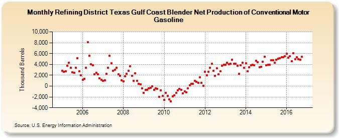

|
Download Data (XLS File) |
|
||||||||
|  | ||||||||
| Refining District Texas Gulf Coast Blender Net Production of Conventional Motor Gasoline (Thousand Barrels) | ||||||||
| Year | Jan | Feb | Mar | Apr | May | Jun | Jul | Aug | Sep | Oct | Nov | Dec |
|---|---|---|---|---|---|---|---|---|---|---|---|---|
| 2005 | 2,849 | 2,640 | 2,688 | 3,785 | 4,343 | 3,382 | 2,585 | 2,448 | 3,393 | 5,154 | 2,757 | 1,981 |
| 2006 | 1,176 | 1,327 | 3,393 | 8,082 | 5,563 | 3,998 | 3,878 | 2,147 | 2,479 | 2,180 | 1,451 | 1,191 |
| 2007 | 1,002 | 1,049 | 2,299 | 3,421 | 5,558 | 4,185 | 2,825 | 2,973 | 3,390 | 2,133 | 1,930 | 1,086 |
| 2008 | 893 | 1,838 | 2,310 | 2,840 | 3,659 | 1,925 | 931 | 2,362 | 977 | 431 | 286 | -396 |
| 2009 | -1,234 | -724 | -739 | -440 | -294 | -90 | -725 | -428 | -550 | -1,957 | -789 | -1,808 |
| 2010 | -2,559 | -1,265 | -1,803 | -2,414 | -2,800 | -1,932 | -1,669 | -1,284 | -763 | -501 | -668 | -1,333 |
| 2011 | -1,010 | -1,183 | -424 | 147 | 406 | 382 | 937 | 746 | 612 | 1,609 | 562 | 77 |
| 2012 | 2,683 | 2,012 | 2,673 | 3,347 | 4,111 | 2,851 | 1,914 | 3,243 | 2,204 | 2,694 | 3,783 | 3,955 |
| 2013 | 3,956 | 4,320 | 4,045 | 4,160 | 4,888 | 4,098 | 4,104 | 3,716 | 2,223 | 3,815 | 4,280 | 3,338 |
| 2014 | 4,203 | 2,743 | 3,518 | 3,804 | 3,909 | 3,876 | 4,672 | 4,404 | 3,491 | 3,542 | 4,497 | 5,440 |
| 2015 | 3,884 | 3,973 | 3,962 | 4,722 | 4,743 | 4,350 | 4,870 | 5,048 | 5,126 | 5,290 | 5,279 | 5,483 |
| 2016 | 5,995 | 5,195 | 5,548 | 4,595 | 6,052 | 4,987 | 5,330 | 4,963 | 4,867 | 5,437 | 5,758 | |
| - = No Data Reported; -- = Not Applicable; NA = Not Available; W = Withheld to avoid disclosure of individual company data. |
| Release Date: 1/31/2017 |
| Next Release Date: 2/28/2017 |